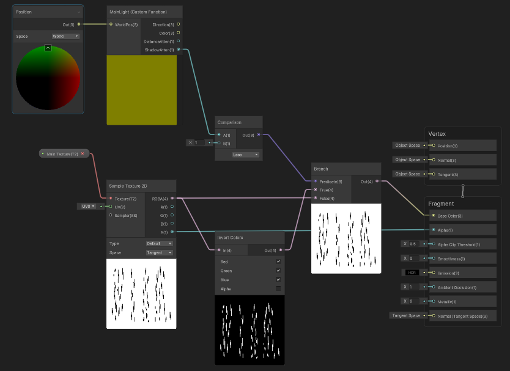
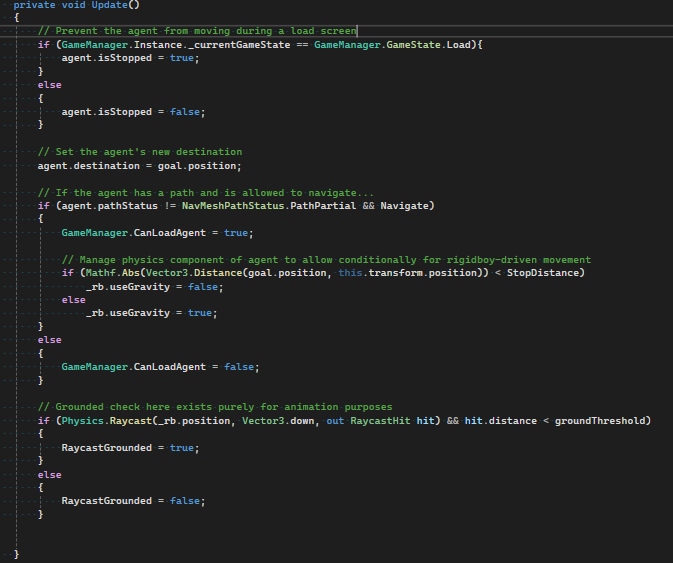
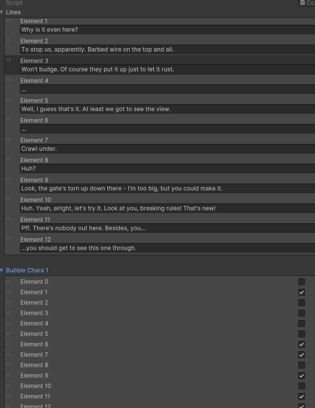

|
Two Friends In The Woods,
|

|
Unity |
C# |
HLSL |


Jump to info on...

Black and White Shaders
Unity in Two Bit
The central technical challenge of this project was making a 3D game that exists solely in two colors; shadows and lights couldn't be allowed to behave in a naturalistic manner and create shades of gray.
To solve this problem, I created a fragment shader (first with HLSL, and then ported to Unity ShaderGraph) that takes in the light level being cast on an object as input, and uses it to determine whether an object's texture should be inverted at each given point rendered. The result
removes any gradiation caused by Unity's lighting model, replacing it with a cohesive binary.


NavMesh and Follower AI
One Player In Two Characters
To support the core idea of there being two friends in the woods, I utilized and adapted Unity's navigation mesh packages in combination with my own character controller logic to create a leader/follower dynamic.
The non-player character at any given time will follow the leader within the bounds of the navmesh, obey the same physics as if it were under the control of the player, and remain stationary when it cannot follow the player, enabling
the ability to swap between the characters when they are separated to solve problems.
Content-Driven Cutscene Creation
Words Between Two Characters
In addition to writing the script, I needed to write the container that held it. Using a ScriptableObject template, I created a content-driven way to set up cutscenes where the characters speak to each other.
Behind the scenes, a conversation manager uses this data to change the speech bubble sprite and update the dialogue, and also handles transitions between gameplay and cutscene using Unity Cinemachine and the character navmesh AI to
direct the agents to their places for each conversation.

Want to see more? Check out...


Want to get in touch? Find me in all of these places!
|
Link up on my LinkedIn profile |
Scratch an itch on my Itch.io page |
Send me an email at awk481@gmail.com |
© 2026 Andrew Kohler